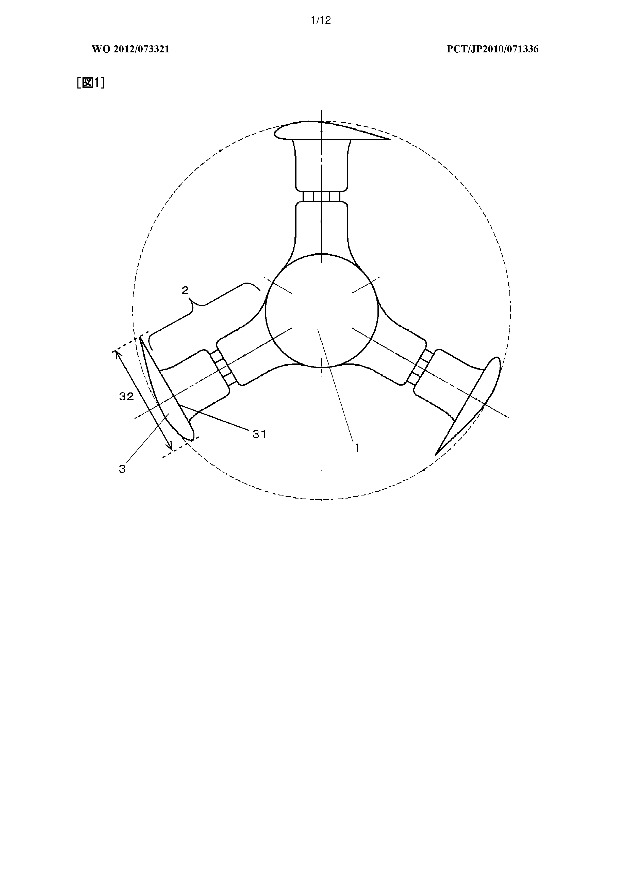
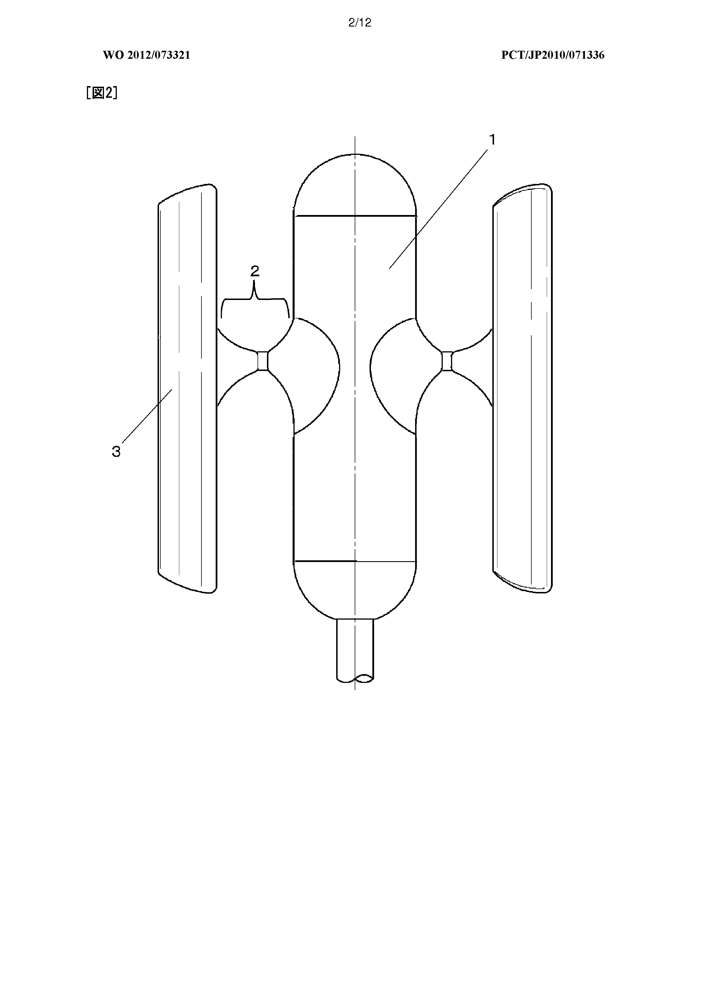
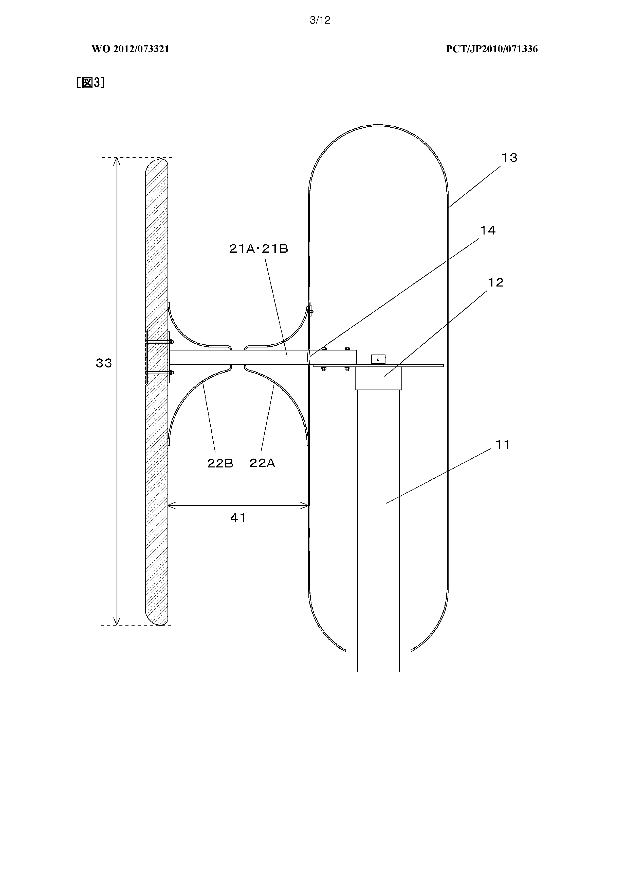
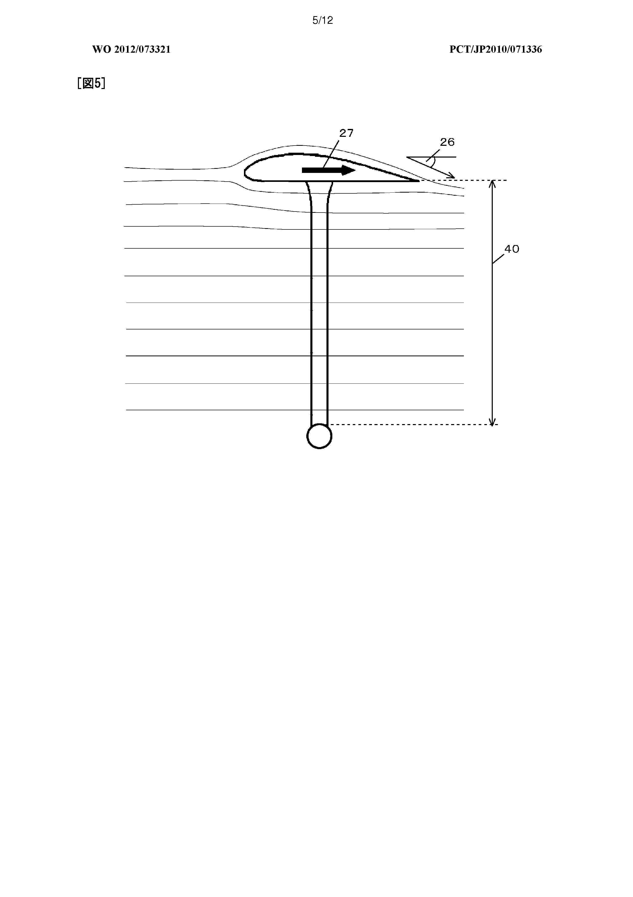
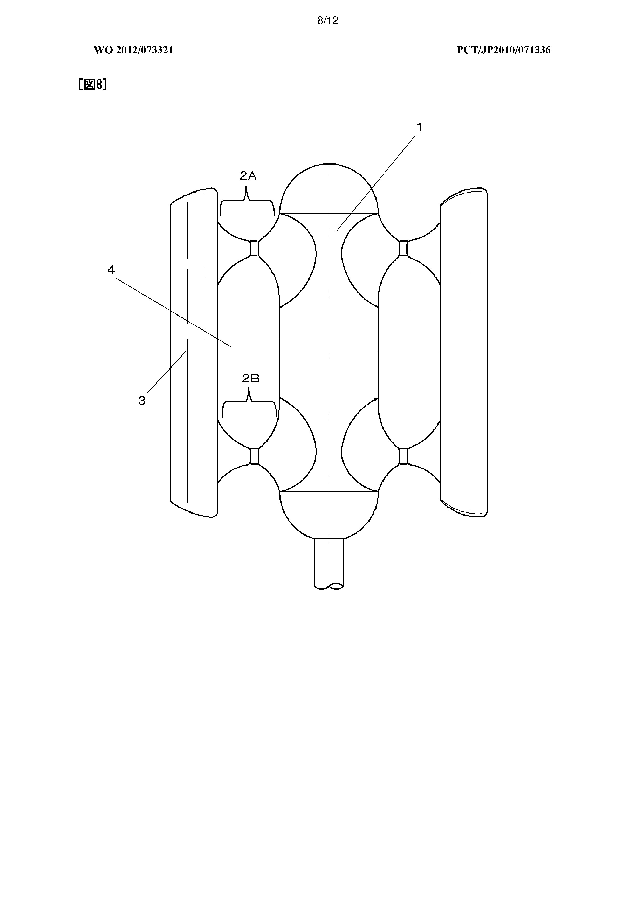
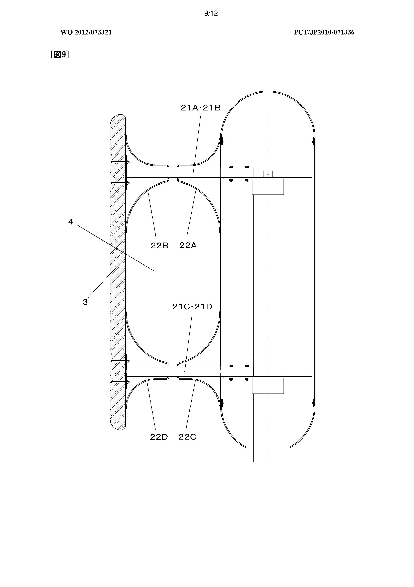
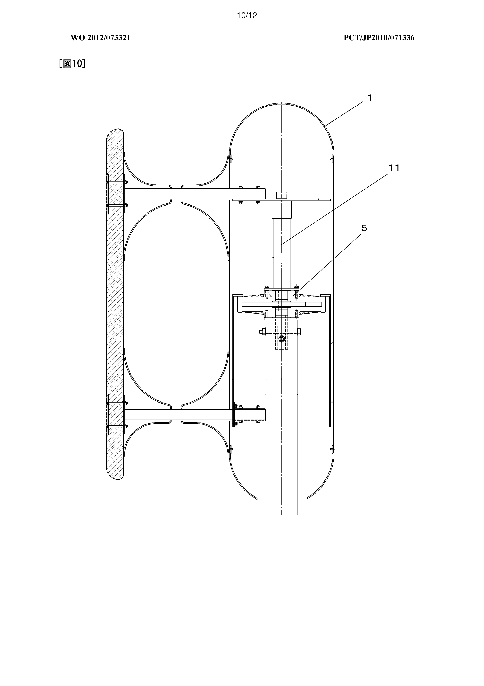
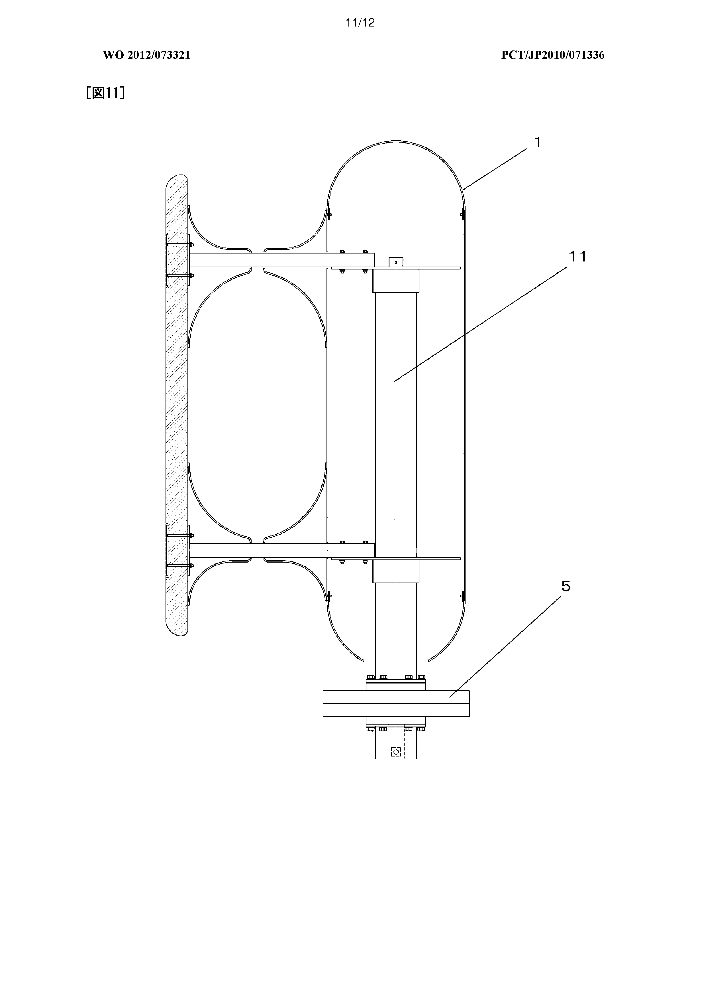

Bibliographic Data
Applicants
Inventors
Classification
IPC
CPC
Priorities
Application
Publication
Published as
Inventors
Classification
IPC
CPC
Priorities
Application
Publication
Published as
CNO CO LTD [JP]; SUGISAKI KEN [JP]
SUGISAKI KEN [JP]
F03D3/06;
F03D3/064 (EP); Y02E10/74 (EP);
JP2010071336W·2010-11-30
JP2010071336W·2010-11-30
WO2012073321A1·2012-06-07
JPWO2012073321A1;WO2012073321A1
F03D3/06;
F03D3/064 (EP); Y02E10/74 (EP);
JP2010071336W·2010-11-30
JP2010071336W·2010-11-30
WO2012073321A1·2012-06-07
JPWO2012073321A1;WO2012073321A1
VERTICAL SHAFT WINDMILL
Abstract
[Problem] Conventional vertical shaft windmills struggled to obtain good rotation starting properties, because drag operated more strongly than lift force in low wind regions. The purpose of the present invention is to provide a vertical shaft windmill capable of efficient rotation even in low wind regions. [Solution] In order to solve said issue, the present invention provides a vertical shaft windmill comprising a cylindrical rotating shaft and a plurality of blades supported by the cylindrical rotating shaft via a blade supporting arm. The interval between the blades and the cylindrical rotating shaft is at or below the length of the blades in the vertical direction.
Abstract
[Problem] Conventional vertical shaft windmills struggled to obtain good rotation starting properties, because drag operated more strongly than lift force in low wind regions. The purpose of the present invention is to provide a vertical shaft windmill capable of efficient rotation even in low wind regions. [Solution] In order to solve said issue, the present invention provides a vertical shaft windmill comprising a cylindrical rotating shaft and a plurality of blades supported by the cylindrical rotating shaft via a blade supporting arm. The interval between the blades and the cylindrical rotating shaft is at or below the length of the blades in the vertical direction.
Description
The present invention relates to a vertical shaft type wind turbine used for wind power generation and the like.As a wind turbine, a horizontal axis type windmill having a horizontal rotation axis and a vertical axis type windmill having a vertical rotation axis are known. Unlike the horizontal axis type wind turbine, the vertical axis type wind turbine has an advantage that it can be used as a rotational driving source for any wind from 360 degrees, and it can be arranged in a compact space.
As a vertical axis type wind turbine, one having a structure in which a plurality of blades are installed on a circumference around a thin rotation axis is generally known. For example, Patent Document 1 discloses a technique for improving the aerodynamic characteristics of a blade and improving the rotation efficiency by adjusting the blade thickness of the vertical axis wind turbine.
However, in the conventional vertical axis wind turbine, the drag acts stronger than the lift force in the fine wind speed region, so it was difficult to obtain high rotational activation performance. Accordingly, it is an object of the present invention to propose a vertical axis type wind turbine capable of efficiently rotating the wind turbine even in a slight wind speed region.
In order to solve the above-mentioned problems, the present invention is a vertical shaft type wind turbine comprising a cylindrical rotary shaft and a plurality of blades supported by the blade supporting arms on the cylindrical rotary shaft, And the distance between the cylindrical rotary shafts is substantially the same as the diameter of the cylindrical rotary shaft.
In the present invention, the force (induced drag) that drags the blade to the trailing edge side becomes weaker and the ratio of the lift force to the drag force increases, enabling the blade to be rotated efficiently even in the slight wind speed region.
BRIEF DESCRIPTION OF THE DRAWINGS FIG. 1 is a plan view showing an example of a shape of a vertical axis windmill according to a first embodiment of the present invention. FIG. 2 is a front view showing an example of a shape of a vertical axis windmill according to a first embodiment. 1 is a plan view showing an example of the structure of a vertical axis type wind turbine of the conventional vertical axis wind turbine. FIG. 1 is a view showing the state of the induced drag acting on the wing of the conventional vertical axis wind turbine. The state of induced drag acting on the wing of the vertical axis type wind turbine of Embodiment 1 is shown in Drawings showing lift and drag acting on the wings of the vertical axis type wind turbine of Embodiment 1 Front view showing an example of the shape of the vertical axis type wind turbine of Embodiment 2 An example of the structure of the vertical axis windmill of Embodiment 2 Side view showing a vertical axis type wind turbine according to a third embodiment of the present invention Side view showing another example of the structure of a vertical axis type wind turbine in a third embodiment Side view showing another example of the structure of a vertical axis type wind turbine in a third embodiment Power generation amount and wind speed Fig.
Hereinafter, embodiments of the present invention will be described. The correspondence relationship between claims and embodiments is as follows. The first embodiment mainly relates to claims 1 to 5, the second embodiment mainly relates to claims 6 and 7, and the third embodiment mainly relates to claim 9. It should be noted that the present invention is not limited to the examples of the following embodiments, and can be implemented in various modes.
<< Embodiment 1 >>
The "cylindrical rotating shaft" 1 has a function of serving as a rotating shaft of a blade and a function of receiving the wind blowing from the horizontal direction at its side surface and forming an air flow around the axis. Further, it plays a role as a surface facing the "lower surface of the blade" 31 and has a function of increasing the pressure of the airflow between the blade and the cylindrical rotation shaft.
It is preferable that the diameter of the cylindrical rotary shaft be substantially the same as the "chord length" 32 in order to sufficiently play the role of the cylindrical rotary shaft as the opposed face. If the diameter of the cylindrical rotary shaft is made smaller than the chord length, the function as the face opposing the lower face of the wing is deteriorated, and if it is made too large than the chord length, the size and the weight of the cylindrical rotary shaft are unnecessarily large turn into. In this specification, "substantially the same" means that the difference between one value and the other value is within ± 20% of the smaller one of absolute values of one or the other.
Similarly, it is preferable to make the length in the vertical direction of the cylindrical rotary shaft substantially equal to the length in the vertical direction of the blades in order that the cylindrical rotary shaft sufficiently fulfills the role of the face opposed to the lower face of the blade. If the length in the vertical direction of the cylindrical rotary shaft is short compared with the length in the vertical direction of the blade, the function as the opposing face is deteriorated and the length in the vertical direction of the cylindrical rotary shaft is defined as the length in the vertical direction of the blade If it is made longer compared with that, the size and weight of the cylindrical rotary shaft will be larger than necessary.
3 and 4 are a side view and a plan view showing an example of the internal structure of the vertical axis wind turbine of the present embodiment. As shown in FIG. 3, the "cylindrical rotating shaft" includes a "strut member" 11, a "connecting member" 12 for connecting the strut members and members of the wing supporting arms, a "cylindrical cover Member "13 and the like can be considered. Also, the cylindrical cover member is provided with "arm takeout hole" 14 for passing the member of the blade support arm.
Here, with respect to the strut member, a metal such as stainless steel or a high-strength material such as carbon fiber is used, and for the connecting member and cylindrical cover member, a durable and lightweight material such as metal such as aluminum, carbon fiber, plastic resin or the like Is preferably used. It is also conceivable to use a lightweight plastic material such as acrylic resin, ABS resin or the like which is easy to process for a portion which is not required to have strength in the cylindrical cover member.
The "blade support arm" 2 has a function of connecting the blade and the cylindrical rotation shaft and transmitting the rotational force by the blade to the cylindrical rotation shaft. As shown in FIGS. 3 and 4, for example, the "wing supporting arm" includes two "arm members" 21A and 21B connected to a cylindrical rotating shaft, and a pair of "arm cover members" covering the arm members 22A and 22B, and the like can be considered.
Here, as the arm member, it is preferable to use a material having high durability and light weight such as aluminum or carbon fiber. For the arm cover member, it is preferable to use an easy-to-process and light-weight plastic material such as acrylic resin, ABS resin or the like.
Further, by setting "the distance between the blade and the cylindrical rotation axis" 41 equal to or less than "the length of the blade in the vertical direction" 33 or less, the force (induced drag) which drags the blade to the trailing edge side is decreased as described below It will be possible.
FIG. 5 is a view showing a state of induced drag acting on a blade in a conventional general vertical wind turbine. In the conventional vertical axis windmill, from the viewpoint of increasing the rotational force, "the distance between the blade and the rotating shaft" 40 is made relatively large, and the diameter of the rotating shaft is made small as the strength allows. In such a case, the pressure at the spacing between the blades and the rotating shaft will be slightly higher than the upper surface of the wing but not so high. For this reason, "the inclination (blowing down angle) of the air flow" 26 directed from the upper surface side to the lower surface side of the blade at the trailing edge of the blade becomes large. Here, since the induced drag acting on the wing increases as the blow-down angle increases, a relatively large "induced drag" 27 is generated with respect to the blades.
FIG. 6 is a view showing a state of the induced drag acting on the blade when the distance between the blade and the cylindrical rotation axis is equal to or less than the length of the blade in the vertical direction. When the "interval between the blade and the cylindrical rotation axis" 41 is equal to or less than the length in the vertical direction, the pressure at the interval between the blade and the cylindrical rotation shaft becomes higher than that of the conventional vertical axis windmill. For this reason, "the inclination (blowing down angle) of the air flow" from the upper surface side of the blade to the lower surface side at the trailing edge of the blade becomes comparatively small. Since the induced drag acting on the wing becomes weaker as the wind down angle decreases, the "induced drag" 27 acting on the wing decreases as the wind down angle decreases. In other words, by making the rotation axis cylindrical, and making the distance between the blade and the cylindrical rotation axis equal to or shorter than the length of the blade in the vertical direction, induced drag acting on the blade can be reduced.
Note that when the distance between the blade and the cylindrical rotation axis is equal to or less than half of the length in the vertical direction of the blade, the induced drag acting on the blade is particularly preferable in particular. However, if the distance between the blade and the cylindrical rotating shaft is too narrow, the rotating torque becomes smaller, and conversely, the distance between the blade and the cylindrical rotating shaft is set to about 25 to 35% of the length in the vertical direction of the blade .
Further, from the viewpoint of rectifying the air flowing on the side surface of the blade supporting arm in the horizontal direction, it is preferable that the "average horizontal width of the blade supporting arm" 42 is not less than 30% of the diameter of the cylindrical rotating shaft. From the viewpoint of light weight, it is preferable that the blade supporting arm is less than 50% of the diameter of the cylindrical rotating shaft. Further, as shown in FIG. 2 and FIG. 3, by making the arm cover member into a curved surface, it is possible to make the flow of the air flow smooth.
Further, it is preferable to provide a hole portion at any position of the blade support arm to secure a flow path in the vertical direction. With this configuration, since the flow path is secured in the vertical direction even when the blade support arm rotates, air can smoothly enter and exit the inside of the circumferential locus of the blade. Specifically, as shown in FIG. 4, two "arm members" 21A and 21B are disposed with a predetermined space, and at the approximate center of the region from the blades to the cylindrical rotation axis, the "arm member" It is conceivable that it is not covered with the "arm cover members" 22A, 22B. As a result, a "hole" 23 serving as a flow path in the vertical direction is formed at substantially the center of the region from the blade to the cylindrical rotation axis.
In FIGS. 2 and 3, the blade support arm supports the blade at one position in the vertical direction at a substantially central position, but it is also possible to support the blade at the upper and lower positions by the blade support arm However, it is also possible to support in more places. Also, various support points can be considered.
"Wing" 3 has a function of generating torque in the rotational direction by lift. Here, it is preferable to use a lightweight high strength material such as fiber reinforced plastic, carbon fiber, or the like. In addition, from the viewpoint of uniformly generating torque irrespective of the direction in which horizontal wind blows, it is preferable that the plurality of blades be supported at equal intervals in the rotational direction.
As shown in FIG. 4, "wing top surface" 30 gently curves from the leading edge to the trailing edge and "wing lower surface" 31 is planar from the leading edge to the trailing edge. Also, the leading edge portion of the blade has a rounded shape and the trailing edge portion has a pointed shape. These features are similar to the main wing of the airplane. From the viewpoint of generating high lift force, the blade thickness is preferably 5 to 30% of the diameter of the cylindrical rotation shaft at the thickest part.
FIG. 7 is a view showing the force acting on the blade when the horizontal wind blows. As shown in this figure, "wing" 3 generates "lift" 52 by receiving "wind from the horizontal direction" 51. The lift acts in a direction perpendicular to the "drag" 53 acting on the wing and has a component in the "rotational direction" 54. The blade rotates using the component in the rotation direction as a drive source. Here, "the force (induced drag) that drags the blade to the trailing edge side" is reduced by making the distance between the blade and the cylindrical rotation shaft equal to or shorter than the vertical length of the blade as described above. Therefore, in the vertical axis wind turbine of the present embodiment, the ratio of the lift to the drag increases, enabling to obtain a larger rotational force.
<< Embodiment 2 >>
"Rectifying window" has the function of adjusting the flow velocity and direction of the air flowing into the space between the blade supporting arm, the cylindrical rotating shaft and the blade. Since the air flowing into the rectifying window is compressed, the induced drag acting on the blade further decreases. Therefore, in the vertical axis wind turbine of the present embodiment, the ratio of the lift to the drag is further increased, and it is possible to obtain higher rotation efficiency even in the slight wind speed region.
FIG. 9 is a side view showing an example of the structure of the vertical axis wind turbine of this embodiment. As shown in this figure, when the "blade support arm" is composed of two "arm members" 21A, 21B (21C, 21D) and "arm cover members" 22A, 22B (22C, 22D), the arm cover member May be a hyperboloid, so that the rectifying window may be substantially 0-shaped when viewed from the front. It should be noted that the arm cover member may have a curved shape such as a truncated cone or a hemispherical surface.
In order to enhance the effect of rectification, it is preferable that the horizontal width of the blade support arm is 30% or more of the length in the rotation direction of the blade. Incidentally, even if it is 50% or more, since it does not greatly affect the effect of rectification, it is preferably 30 to 50% from the viewpoint of weight reduction.
In addition, it is preferable that the interval between the upper and lower blade support arms is 50% or more of the length in the vertical direction of the blade. It is possible to rectify (compress) the air of a predetermined amount or more in the horizontal direction by making the region of the rectification window somewhat larger.
In addition, it is particularly preferable that the distance between the blade and the cylindrical rotary shaft is substantially half of the interval between the upper and lower blade support arms. Since the distance is equal to or less than half of the length in the vertical direction of the blade, it is possible to sufficiently reduce the force (induced drag) acting on the trailing edge side of the blade, and it is possible to reduce the distance between the blade and the cylindrical rotation shaft , A relatively large rotational torque can be generated.
<< Embodiment 3 >>
In addition to the configuration of the first or second embodiment, the vertical axis windmill of the present embodiment is characterized by having a generator that shares a shaft with the cylindrical rotation shaft. With this configuration, rotation of the cylindrical rotary shaft can be directly transmitted to the generator, enabling efficient power generation.
"Generator" has the function of converting axial rotation of the cylindrical rotating shaft into electric power. Since the generator of this embodiment shares the shaft with the cylindrical rotary shaft, the rotational force of the cylindrical rotary shaft can be directly used, and power generation can be performed efficiently. As a specific example of the generator, it is conceivable to use, for example, a permanent magnet type AC generator or the like. The electric power generated by the generator is taken out by a wiring (not shown). It is conceivable that the electric power is consumed by an electric device such as a lighting device or charged into a battery.
FIG. 11 is a view showing another example of the structure of the vertical axis wind turbine of the present embodiment. As shown in FIG. 10, the generator can be disposed inside the cylindrical rotary shaft. However, for example, in the case where the shape of the generator is large and it can not be arranged inside the cylindrical rotary shaft, But it is also possible to arrange it below the cylindrical rotary shaft as shown. It is also possible to arrange the generator above the cylindrical rotary shaft.
A low rotational speed, high output wind power generator can also be constructed by disposing a transmission such as a gear and a pulley sharing the shaft with the cylindrical rotating shaft and providing a generator connected to the transmission is there.
It is also possible to control the generator by a control controller installed inside or outside the vertical axis windmill. For example, when it is desired to control the rotation speed to a constant speed range, it is conceivable to apply an electric brake or accelerate it by utilizing the electric power of the battery connected to the generator.
The vertical axis wind turbine of this embodiment has a cylindrical rotary shaft, blade support arms for supporting the blade at two upper and lower positions, three blades supported at equal intervals in the rotation direction, a cylindrical rotary shaft And a generator which shares the shaft and is arranged inside the cylindrical rotary shaft. The shape of the vertical axis wind turbine of this embodiment is the same as the example shown in FIG. 7 and FIG. 8, and the structure is the same as the example shown in FIG. 10.
The cylindrical rotary shaft is composed of a support pillar member, a connecting member connecting the support pillar member and the blade supporting arm, and a hollow cylindrical cover member covering the support pillar member and the like. Here, the strut member is a stainless steel material, and the connecting member and the cylindrical cover member are made of an aluminum material. The upper and lower portions of the cylindrical cover member are dome of acrylic resin material. The diameter of the cylindrical cover member is the same as the chord length of the wing, and the vertical length of the cylindrical cover member including the dome is 115% of the vertical length of the wing. The chord length is 0.30 [m], and the length of the wing in the vertical direction is 1 [m].
In the vertical shaft type wind turbine of this embodiment, since the three blades are supported at two upper and lower positions, there are six blade support arms in total. Each blade support arm is composed of two arm members arranged with a gap and a pair of arm cover members. The arm member is an aluminum material, and the arm cover member is an acrylic resin material. The distance from the cylindrical cover member to the blade is 30% of the length of the blade in the vertical direction. Also, the average horizontal width (average horizontal width of the arm cover member) of the blade support arm is 40% of the diameter of the cylindrical cover member. Also, the arm cover member is hyperboloidal, and the rectifying window surrounded by the arm cover member, the cylindrical cover member, and the blades has a substantially 0 shape when viewed from the horizontal direction.
The upper surface of the blade has a gently curved shape from the front edge to the rear edge, and the lower surface of the blade has a planar shape from the front edge to the rear edge. Also, the leading edge portion of the blade has a rounded shape and the trailing edge portion has a pointed shape. The diameter of the circumferential locus of the wing is the same as the length of the wing in the vertical direction. Also, the thickest part of the wing is 5% of the length of the wing in the vertical direction. The weight of each blade is 3 [kg].
The generator is a permanent magnet type three-phase alternating-current generator and is disposed inside a cylindrical rotating shaft. Here, the body of the generator and the blade support arm are connected by a connecting member of aluminum.
FIG. 12 is a diagram showing the relationship between the power generation amount and the wind speed of the vertical axis windmill of this embodiment. As shown in the figure, the vertical axis windmill of the present embodiment generates electric power of 11 [W] at a wind speed of 4 [m / s] and electric power of 305 [W] at a wind speed of 12 [m / s] It is possible to generate electricity. In other words, it was possible to efficiently generate power even in the slight wind speed region.
1: cylindrical rotating shaft, 2: blade supporting arm, 3: blade, 4: rectifying window, 5: generator, 11: strut member, 12: connecting member, 13: cylindrical cover member, 14: arm extraction hole, 21 A D: arm member, 22 A to D: arm cover member, 23: hole portion, 26: downhill angle, 27: induced drag, 30: upper surface of the blade, 31: lower surface of the blade, 32: chord length, 33 ... The distance between the blade and the rotating shaft (prior art), 41 the interval between the blade and the cylindrical rotating shaft, 42 the horizontal width of the blade supporting arm, 51 the horizontal wind, 52 ... Lift acting on the wing, 53 ... drag acting on the wing, 54 ... direction of rotation of the wing
Claims
1. A vertical shaft type wind turbine comprising a cylindrical rotary shaft and a plurality of blades supported on a cylindrical rotary shaft with a blade support arm, wherein a distance between the blade and the cylindrical rotary shaft is set to be equal to a vertical direction A vertical axis type windmill having a length equal to or less than the length of the windmill.2. The vertical shaft type wind turbine according to claim 1, wherein a distance between the blade and the cylindrical rotation axis is equal to or less than a half of a length of the blade in the vertical direction.
3. The vertical shaft type wind turbine according to claim 1 or 2, wherein a diameter of the cylindrical rotation shaft is substantially equal to a chord length of the blade.
4. The vertical axis wind turbine according to claim 1, wherein a length of the cylindrical rotation shaft in the vertical direction is substantially the same as a length of the blade in the vertical direction. 5.
5. The vertical axis windmill according to any one of claims 1 to 4, wherein a horizontal width of the blade supporting arm is 30 to 50% of a length of the blade in the rotational direction.
6. The vertical blade according to claim 1, wherein a rectifying window surrounded by the blade supporting arm, the cylindrical rotary shaft, and the blade is formed by supporting the blade at upper and lower two positions of the blade supporting arm Shaft type windmill.
7. The vertical shaft type wind turbine according to claim 6, wherein a distance between the blade and the cylindrical rotation axis is substantially half of an interval between the upper and lower blade support arms.
8. The vertical shaft type wind turbine according to claim 1, further comprising a generator that shares a shaft with the
Drawing

Drawing page 1 of 12

Drawing page 2 of 12

Drawing page 3 of 12
 Drawing page 4 of 12
Drawing page 4 of 12

Drawing page 5 of 12
 Drawing page 6 of 12
Drawing page 6 of 12
 Drawing page 7 of 12
Drawing page 7 of 12

Drawing page 8 of 12

Drawing page 9 of 12

Drawing page 10 of 12

Drawing page 11 of 12
 Drawing page 12 of 12
Drawing page 12 of 12
Download
Citations
| Cited origin | Publication | Title | Earliest priority date | Publication date | Applicants | IPC | CPC |
|---|---|---|---|---|---|---|---|
| ISR | JP2006070761A | WIND POWER GENERATOR | 2004-08-31 | 2006-03-16 | DAIWA HOUSE IND |
F03D11/00, F03D3/00, H02K7/18 |
Y02E10/74 (EP) |
| ISR | JP2006283713A | LIFT/DRAG COMBINED TYPE VERTICAL SHAFT WINDMILL | 2005-04-04 | 2006-10-19 | DAIWA HOUSE IND, INABA DENKI SEISAKUSHO KK |
F03D3/04, F03D3/06 |
Y02E10/74 (EP) |
| ISR | JP2003206848A | INTEGRATED WIND AND WATER TURBINE, AND MANUFACTURING METHOD THEREOF | 2001-11-09 | 2003-07-25 | UNIV TOKAI |
B29C70/06, F03B3/12, F03D11/00, F03D3/00, F03D3/06 |
F03D3/005 (EP,US),
F03D3/061 (EP,US), F05B2210/16 (EP,US), F05B2240/214 (EP,US), Y02E10/20 (EP,US), Y02E10/74 (EP,US), Y02P70/50 (EP,US) |
| ISR | JP2009150319A | WIND TURBINE VIBRATION DAMPING DEVICE, AND WIND TURBINE DEVICE | 2007-12-20 | 2009-07-09 | SINFONIA TECHNOLOGY CO LTD |
F03D11/00, F03D3/06, F16F15/02 |
Y02E10/74 (EP) |
Legal Events
| Event indicator | Category | Event description | Countries | Event date | Effective date | Details |
|---|---|---|---|---|---|---|
| WO 121 | W: Other | EP: THE EPO HAS BEEN INFORMED BY WIPO THAT EP WAS DESIGNATED IN THIS APPLICATION | EP | 2012-07-25 | Reference document
Country: EP Number: 10860349 Kind: A1 |
|
| DE NENP | A: Application filing | NON-ENTRY INTO THE NATIONAL PHASE | 2013-05-31 | |||
| JP ENP | A: Application filing | ENTRY INTO THE NATIONAL PHASE | 2013-08-13 | Reference document
Country: JP Number: 2012546603 Kind: A |
||
| WO 122 | A: Application filing | EP: PCT APPLICATION NON-ENTRY IN EUROPEAN PHASE | EP | 2013-12-25 | Reference document
Country: EP Number: 10860349 Kind: A1 |
Patent Family
| Publication | Application number | Title | Publication date | Applicants |
|---|---|---|---|---|
| JPWO2012073321A1 | JP2012546603A | 垂直軸型風車 | 2014-05-19 | |
| WO2012073321A1 | JP2012546603A | VERTICAL SHAFT WINDMILL | 2012-06-07 | CNO CO LTD [JP] |